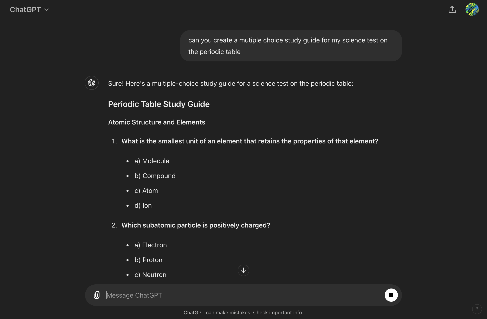

Best Uses of ChatGPT
Here is a list of the best things to use ChatGPT for.
- Coding. In my opinion, the thing that ChatGPT is best at is helping to create code. It can be very useful in many situations, including not knowing how to do a function, debugging code and finding mistakes, and even creating a full outline for you project, leaving you to fill in the details. It can even give you a breakdown of what your code does. Best of all, it provides it in an easy way to copy and paste. Although it can sometimes mess up, a skilled programmer can be much more efficient and effective by using ChatGPT to their advantage.
- Generating ideas and names. Another thing that ChatGPT is quite useful for is generating creative names. If you have an idea for a something, but need a name, simply put your requirements into ChatGPT and let it work its magic. You can even add specifics, such as make the names more serious. It can also do a similar thing with generating ideas for almost anything
- Studying. ChatGPT can be very useful for studying as it can create personalized quizzes, help you review topics, and explain things simply in many different ways. This is very useful for many topics, barring anything current, as ChatGPT does not have access to updated information.


